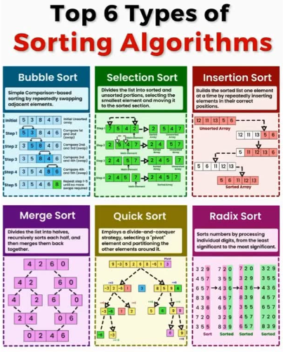
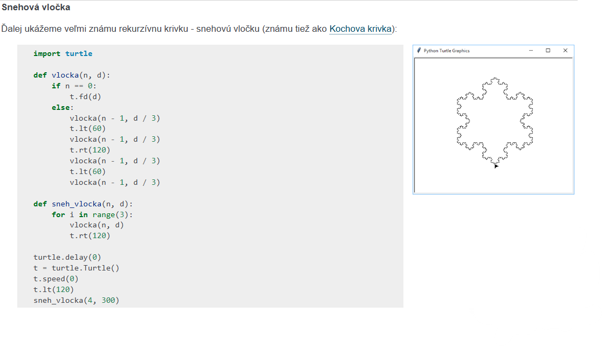

Prednášky
Funkcie
2.10 Algoritmizácia funkcií
Rozdeľ program na podprogramy, používaj parametre a vracaj výsledky.
Otvoriť prednášku
Algoritmy
2.11 Algoritmy triedenia
Porovnaj rôzne spôsoby triedenia a zisti, ako fungujú v Pythone.
Otvoriť prednášku
Rekurzia
Rekurzia a rekurzívne triedenie
Pochop rekurzívne volania, základný prípad a triedenie rozdeľovaním.
Otvoriť prednášku